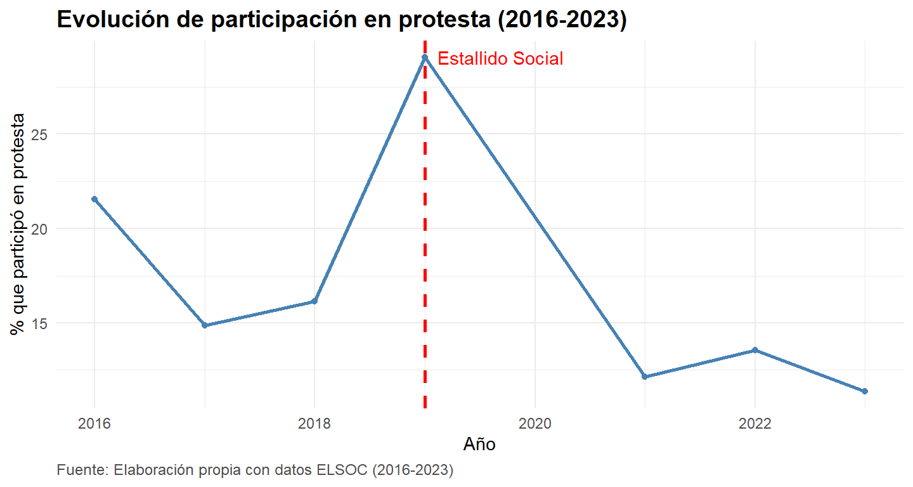
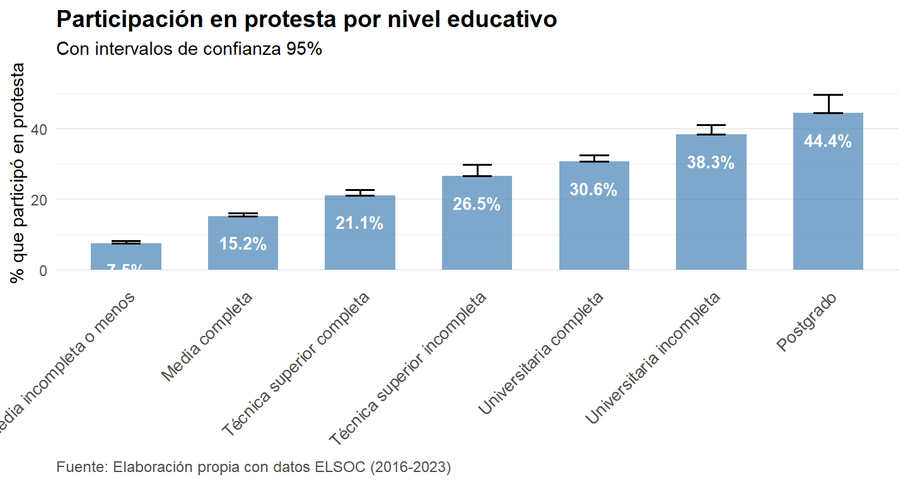
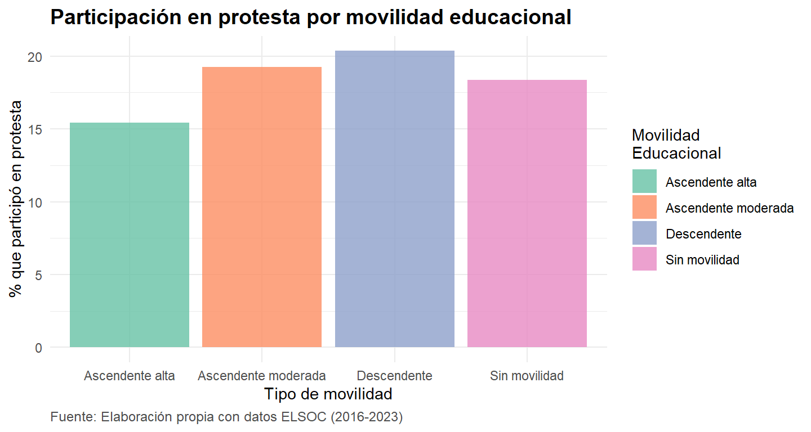
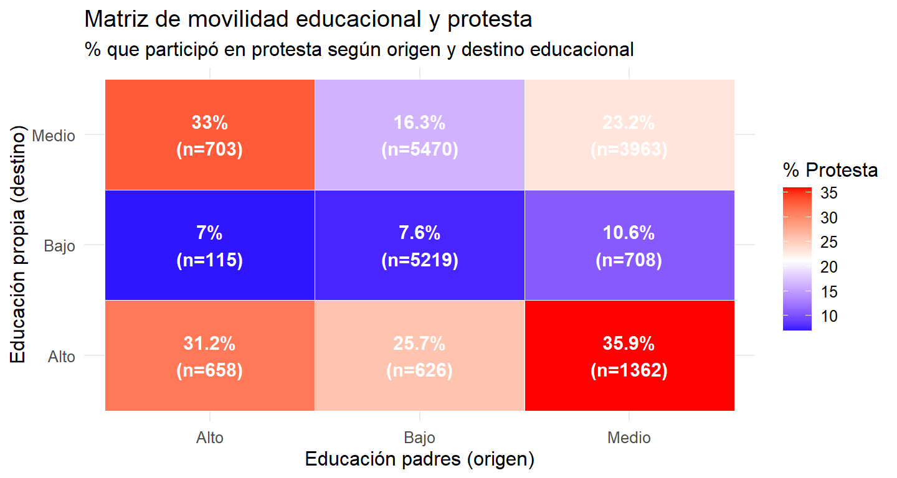
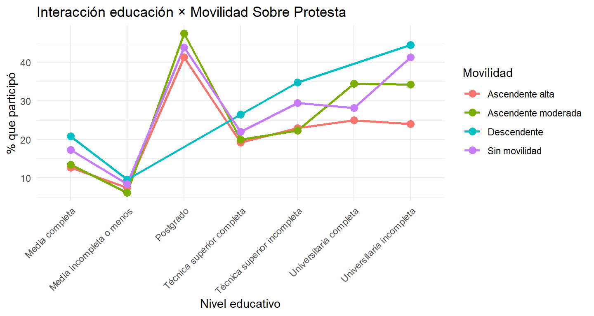

| Año | N | Participó (%) | M | DE |
|---|---|---|---|---|
| 2016 | 2,917 | 21.6 | 0.29 | 0.60 |
| 2017 | 2,430 | 14.9 | 0.20 | 0.51 |
| 2018 | 3,664 | 16.1 | 0.22 | 0.53 |
| 2019 | 3,275 | 29.1 | 0.37 | 0.63 |
| 2021 | 2,634 | 12.1 | 0.12 | 0.33 |
| 2022 | 2,570 | 13.5 | 0.17 | 0.47 |
| 2023 | 2,562 | 11.4 | 0.14 | 0.42 |
| Note: | ||||
| Fuente: Elaboración propia con ELSOC 2016-2023. | ||||
| 1 El año 2019 corresponde al estallido social en Chile. |
1 ANÁLISIS DESCRIPTIVO
1.1 Análisis Descriptivo Univariado
1.1.1 Variable Dependiente: Participación en Protesta
Tanto la Figure 1 como el Figure 2 presentan los datos de participación en protestas en Chile para el período 2016-2023, según la encuesta ELSOC. Se logra distinguir la fluctuación en los niveles de movilización, con un punto de inflexión presente en el año 2019. Durante ese año, coincidente con el estallido social, la participación ciudadana en protestas alcanzó su máximo del período, con un 29.1% de los encuestados reportando haber participado. Este peak también se refleja en el índice de protesta de la Figure 1, que llegó a su media más alta (M=0.37, DE=0.63). En contraste, los años previos y posteriores muestran cifras considerablemente menores, destacando una marcada disminución tras el 2019, hasta llegar al nivel más bajo de la serie en 2023, con un 11.4% de participación.

1.1.2 Variables Independientes: Educación Encuestado
La Figure 3 detalla la distribución del nivel educativo de la muestra total, basada en los datos agrupados de la encuesta ELSOC (2016-2023). La mayor concentración de participantes se encuentra en los niveles de educación secundaria, donde la categoría “Media incompleta o menos” constituye el grupo más grande con un 34.05%, seguida de cerca por “Media completa” con un 30.08%. En conjunto, estos dos grupos representan a casi dos tercios de la muestra total (64.12%). En cuanto a la educación superior, un 12.91% de los encuestados reporta tener educación técnica superior completa y un 11.64% universitaria completa. El nivel educativo con menor frecuencia corresponde a los estudios de “Postgrado”, representando solo el 1.70% del total de la muestra (N = 20,052).
| Nivel Educativo | N | % | Porcentaje Acumulado |
|---|---|---|---|
| Media completa | 6031 | 30.08 | 30.08 |
| Media incompleta o menos | 6827 | 34.05 | 64.12 |
| Postgrado | 340 | 1.70 | 65.82 |
| Técnica superior completa | 2588 | 12.91 | 78.73 |
| Técnica superior incompleta | 746 | 3.72 | 82.45 |
| Universitaria completa | 2334 | 11.64 | 94.09 |
| Universitaria incompleta | 1186 | 5.91 | 100.00 |
| Note: | |||
| Fuente: Elaboración propia con datos ELSOC (2016-2023) | |||
| 1 N total = 20,052 |
Por su parte, la ?@fig-des-4 presenta la distribución de la movilidad educacional intergeneracional para la muestra de ELSOC (2016-2023). El hallazgo principal es que la categoría más frecuente es “Sin movilidad”, que agrupa a un 42.25% de los encuestados, indicando que una porción significativa mantiene el mismo nivel educativo que sus progenitores. A continuación, se destaca una importante presencia de movilidad ascendente, que en su conjunto suma casi la mitad de la muestra (49.61%). Esta se desagrega en un 26.93% que experimenta una “Ascendente alta” y un 22.68% con una “Ascendente moderada”. Finalmente, la movilidad “Descendente” es el fenómeno menos común, representando solo el 8.14% de los casos analizados (N total = 18,824).
La Figure 4 y el Figure 5 presenta la interacción entre el nivel educativo y la participación en protestas, utilizando datos de la encuesta ELSOC (2016-2023). Se observa una clara tendencia positiva: a mayor nivel de formación educativa, mayor es el porcentaje de participación en protestas y más alto el índice de protesta. El grupo con “Postgrado” exhibe la tasa de participación más elevada, con un 44.4%, y el índice de protesta más alto (M=0.58). Le siguen de cerca quienes poseen estudios de “Universitaria incompleta” (38.3%) y “Universitaria completa” (30.6%). En el extremo opuesto, los niveles educativos más bajos son los que menos participan; el grupo de “Media incompleta o menos” registra la tasa más baja con solo un 7.5% de participación y un índice de protesta de M=0.09. Estos datos sugieren que el capital educativo es un factor fuertemente asociado a la propensión a involucrarse en acciones de protesta en Chile.
1.2 Análisis Descriptivo Multivariado
| Nivel educativo | N | % total | Participó (%) | M | DE |
|---|---|---|---|---|---|
| Media completa | 6031 | 30.1 | 15.2 | 0.19 | 0.48 |
| Media incompleta o menos | 6827 | 34.0 | 7.5 | 0.09 | 0.35 |
| Postgrado | 340 | 1.7 | 44.4 | 0.58 | 0.72 |
| Técnica superior completa | 2588 | 12.9 | 21.1 | 0.27 | 0.57 |
| Técnica superior incompleta | 746 | 3.7 | 26.5 | 0.32 | 0.58 |
| Universitaria completa | 2334 | 11.6 | 30.6 | 0.40 | 0.65 |
| Universitaria incompleta | 1186 | 5.9 | 38.3 | 0.51 | 0.70 |
| Note: | |||||
| Fuente: Elaboración propia con datos ELSOC. | |||||
| 1 El índice suma participación en marchas y huelgas (rango 0-2). |
Además, para el Figure 5 se estimaron los intervalos de confianza al 95%, mostrando que las diferencias observadas no son inocuas. Los márgenes son relativamente estrechos, lo que indica estimaciones precisas de la participación en protesta en cada nivel educativo. Además, los intervalos de los extremos (menos de enseñanza media completa y posgrado) no se superponen, lo que respalda la existencia de una brecha estadísticamente significativa entre ambos grupos. En niveles intermedios, como la educación técnica y universitaria, los intervalos muestran cierto traslape, lo que sugiere que las diferencias entre titulados e incompletos deben interpretarse con mayor cautela. En conjunto, la consistencia de los intervalos refuerza la validez de la tendencia general: a mayor nivel educativo, mayor probabilidad de participación en protestas.

1.2.1 Test ANOVA para Protesta y Educación
Analysis of Variance Table
Response: protesta_index
Df Sum Sq Mean Sq F value Pr(>F)
educ_cat_factor 6 343.9 57.309 225.09 < 0.00000000000000022 ***
Residuals 20045 5103.6 0.255
---
Signif. codes: 0 '***' 0.001 '**' 0.01 '*' 0.05 '.' 0.1 ' ' 1Para confirmar las diferencias significativas, se estimó un test ANOVA para protesta y educación. Este confirmaría que las diferencias observadas en la participación en protestas según nivel educativo son estadísticamente significativas. El modelo muestra un estadístico F = 225,09 con un valor p < 0,001, lo que indica que la variabilidad explicada por la educación es muy superior a la variabilidad dentro de los grupos. En otras palabras, no se trata de fluctuaciones aleatorias: el nivel educativo incide de manera consistente en la propensión a participar en protestas. Este resultado refuerza la evidencia de los descriptivos y de los intervalos de confianza, al demostrar que las diferencias entre categorías educativas en la movilización política son sólidas y estadísticamente robustas.
| Comparación | Diferencia | Error Est. | IC 95% | p-valor | Sig |
|---|---|---|---|---|---|
| Media incompleta o menos - Media completa | -0.097 | 0.009 | [-0.123, -0.071] | <0.001 | *** |
| Media incompleta o menos - Técnica superior incompleta | -0.229 | 0.019 | [-0.286, -0.171] | <0.001 | *** |
| Media incompleta o menos - Técnica superior completa | -0.178 | 0.012 | [-0.212, -0.144] | <0.001 | *** |
| Media incompleta o menos - Universitaria incompleta | -0.411 | 0.016 | [-0.458, -0.365] | <0.001 | *** |
| Media incompleta o menos - Universitaria completa | -0.305 | 0.012 | [-0.341, -0.269] | <0.001 | *** |
| Media incompleta o menos - Postgrado | -0.488 | 0.028 | [-0.571, -0.405] | <0.001 | *** |
| Media completa - Técnica superior incompleta | -0.131 | 0.020 | [-0.189, -0.074] | <0.001 | *** |
| Media completa - Técnica superior completa | -0.081 | 0.012 | [-0.116, -0.046] | <0.001 | *** |
| Media completa - Universitaria incompleta | -0.314 | 0.016 | [-0.361, -0.267] | <0.001 | *** |
| Media completa - Universitaria completa | -0.208 | 0.012 | [-0.244, -0.171] | <0.001 | *** |
| Media completa - Postgrado | -0.391 | 0.028 | [-0.474, -0.308] | <0.001 | *** |
| Técnica superior incompleta - Técnica superior completa | 0.051 | 0.021 | [-0.011, 0.112] | 0.192 | |
| Técnica superior incompleta - Universitaria incompleta | -0.183 | 0.024 | [-0.252, -0.113] | <0.001 | *** |
| Técnica superior incompleta - Universitaria completa | -0.076 | 0.021 | [-0.139, -0.014] | 0.006 | ** |
| Técnica superior incompleta - Postgrado | -0.259 | 0.033 | [-0.357, -0.162] | <0.001 | *** |
| Técnica superior completa - Universitaria incompleta | -0.233 | 0.018 | [-0.286, -0.181] | <0.001 | *** |
| Técnica superior completa - Universitaria completa | -0.127 | 0.014 | [-0.169, -0.084] | <0.001 | *** |
| Técnica superior completa - Postgrado | -0.310 | 0.029 | [-0.396, -0.224] | <0.001 | *** |
| Universitaria incompleta - Universitaria completa | 0.107 | 0.018 | [0.054, 0.160] | <0.001 | *** |
| Universitaria incompleta - Postgrado | -0.076 | 0.031 | [-0.168, 0.015] | 0.173 | |
| Universitaria completa - Postgrado | -0.183 | 0.029 | [-0.269, -0.097] | <0.001 | *** |
| Note: | |||||
| Fuente: Elaboración propia con datos ELSOC 2016-2023. | |||||
| * Significancia: *** p<0.001, ** p<0.01, * p<0.05, . p<0.1 |
| Hipótesis | Comparación | Diferencia | IC 95% | p-valor | Sig |
|---|---|---|---|---|---|
| Referencia | Media completa - Media incompleta o menos | 0.097 | [0.071, 0.123] | <0.001 | *** |
| Referencia | Técnica superior completa - Media incompleta o menos | 0.178 | [0.144, 0.212] | <0.001 | *** |
| H1a | Técnica superior completa - Media completa | 0.081 | [0.046, 0.116] | <0.001 | *** |
| Referencia | Universitaria completa - Media completa | 0.208 | [0.171, 0.244] | <0.001 | *** |
| H1b | Técnica superior completa - Universitaria completa | -0.127 | [-0.169, -0.084] | <0.001 | *** |
| Note: | |||||
| Test de Tukey con ajuste por comparaciones múltiples. | |||||
| a H1a (amarillo): Técnica superior completa < Media completa (no linealidad) | |||||
| b H1b (azul): Universitaria completa > Técnica superior completa | |||||
| c Valores positivos: primer grupo protesta MÁS que segundo grupo |
Ahora, si bien el análisis de varianza (ANOVA) revela diferencias descriptivas significativas entre niveles educativos, la estructura longitudinal de los datos requiere el uso de modelos de efectos que: (a) corrijan la correlación intra-individual debida a observaciones repetidas, (b) controlen por confusores temporales, y (c) modelen apropiadamente la naturaleza binaria de la variable dependiente mediante regresión logística. Por tanto, los resultados del ANOVA se presentan únicamente con propósitos descriptivos, mientras que para las predicciones y el testeo de hipótesis se basan en los modelos de efectos aleatorios multivariados.
| Movilidad Educacional | N | % Protesta | Índice Medio |
|---|---|---|---|
| Ascendente alta | 5,069 | 15.41% | 0.194 |
| Ascendente moderada | 4,269 | 19.23% | 0.248 |
| Descendente | 1,532 | 20.37% | 0.273 |
| Sin movilidad | 7,954 | 18.37% | 0.235 |
| Note: | |||
| Fuente: Elaboración propia con datos ELSOC 2016-2023. | |||
| a % Protesta: Porcentaje que participó en al menos una forma de protesta | |||
| b Índice Medio: Promedio del índice de protesta (0-2) |
1.3 Variable independiente: Interacción entre Protesta y Movilidad Educacional
En Figure 9 muestra la participación en protestas según la movilidad educacional. Las personas con movilidad descendente presentan el nivel más alto de involucramiento (algo por sobre el 20%), lo que sugiere que la pérdida relativa de estatus educativo respecto a la generación de origen puede incentivar una mayor disposición a la acción colectiva. En contraste, quienes experimentan una movilidad ascendente alta registran la menor participación (en torno al 15%), posiblemente debido a una mayor integración institucional o satisfacción con los logros obtenidos, lo que reduce la propensión al conflicto. Los grupos con movilidad ascendente moderada y sin movilidad se ubican en posiciones intermedias, con porcentajes cercanos al 18-19%, indicando que tanto la estabilidad como los ascensos parciales pueden mantener cierto grado de involucramiento político. En conjunto, los resultados apoyan la idea de que la experiencia de movilidad social descendente o limitada se asocia a mayores niveles de descontento y activismo, en línea con las teorías de la privación relativa y las tensiones derivadas de la movilidad intergeneracional.

El cruce entre origen y destino educacional de la matriz de la Figure 10 muestra que la propensión a participar en protestas varía según las trayectorias intergeneracionales. Los mayores niveles de participación se observan entre quienes provienen de hogares con educación media y alcanzan educación alta (35,9%), seguidos por aquellos con origen alto y destino medio (33%), ambos casos que implican experiencias de movilidad educativa relativa. En cambio, las trayectorias descendentes hacia niveles bajos presentan una participación sustancialmente menor (entre 7% y 10%), lo que indica que la pérdida educativa profunda tiende a desmovilizar más que a radicalizar. Estos resultados sugieren que la protesta se activa con mayor fuerza en contextos de movilidad intermedia o de frustración relativa, donde las expectativas de progreso o los temores a la pérdida de estatus generan tensiones políticas más intensas que en situaciones de estabilidad estructural.

Finalmente, el análisis de la interacción entre nivel educativo y movilidad del Figure 11 muestra que la participación en protestas no sigue un patrón uniforme, sino que depende de la trayectoria educativa intergeneracional. Los niveles más altos de participación se observan en el nivel de posgrado, especialmente entre quienes presentan movilidad descendente o sin movilidad, con porcentajes superiores al 40%. En contraste, las personas con movilidad ascendente alta tienden a mostrar niveles más bajos de involucramiento en casi todos los tramos educativos, lo que sugiere una mayor integración al sistema institucional. En los niveles medios y técnicos, las diferencias entre tipos de movilidad se reducen considerablemente, indicando una zona de estabilidad política relativa. En conjunto, los resultados evidencian que la movilidad descendente intensifica la protesta en contextos de alta educación, mientras que la movilidad ascendente tiende a moderarla, reflejando tensiones entre logro educativo, reconocimiento social y orientación política.
